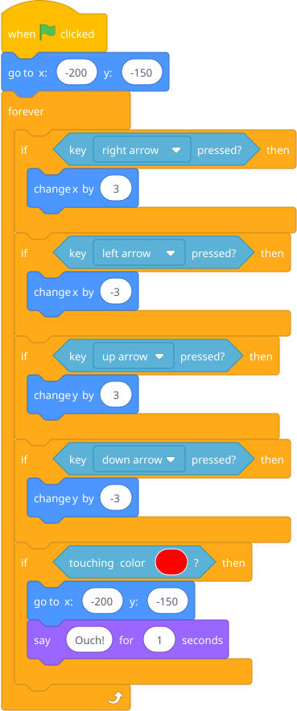
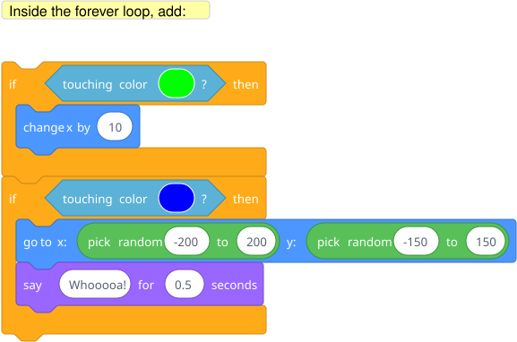

Build a simple world: a sprite, some colored platforms, and red "lava." Introduce if <touching color?> then — if you touch lava, go back to start. He now has a maze game.
Start with just if/then. Don't introduce else yet. One concept per session.
Prep: Paint a backdrop with black platforms and red lava areas (or use a simple hand-drawn one). Set the sprite to a small character.

Blocks to point out: if/then is under Control. touching color? is under Sensing — click the color swatch and then use the eyedropper to pick the exact red from the backdrop. key pressed? is also under Sensing. The movement blocks (change x by, change y by) are under Motion.
Key insight to draw out: The computer is constantly checking a question and deciding what to do based on the answer. "If this, then that" is how all decisions work in code. The forever loop runs these checks over and over — without it, the check would only happen once.
Add a second color that does something different (green = speed boost, blue = teleport).
Hint — blocks he'll need:

Each new color is another if block. He's building up a pattern: one condition, one response. The conditions are all checked every frame inside that forever loop.